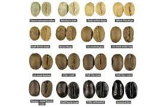

FILOSOFI KOPI
TENTANG Kopi
Kopi adalah salah satu komoditas yang ada di dunia
dan telah dibudidayakan lebih dari 50 negara.
Kopi tiada lain adalah sebuah sajian yang dihasilkan dari biji kopi yang telah disangrai
kemudian dihaluskan sehingga menjadi bubuk...
Baca Selengkapnya >>>>>

MERAUP UNTUNG DARI KOPI
KOMODITAS YANG BESAR
Karna anak muda jaman sekarang suka sekali dengan tempat tempat
yang asik, nyaman, free wi-fi dan update.
maka dari itu saya dirikan kedai kopi ini untuk para kalangan muda masa kini yang suka...
Baca Selengkapnya >>>>>

Manfaat Kopi
Khasiat Minum Kopi
Kopi meningkatkan kecerdasan
Rasa lelah dapat diusir dengan meminum kopi karena kandungan kafein dalam kopi merupakan kandungan psikoaktif.
Kafein dari kopi akan diserap darah dan sampai ke otak...
Baca Selengkapnya >>>>>

qout's filosofi kopi
“Seindah apa pun huruf terukir, dapatkah ia bermakna apabila tak ada jeda? Dapatkan ia dimengerti jika tak ada spasi? Bukankah kita baru bisa bergerak jika ada jarak? Dan saling menyayang bila ada ruang?”
― dee, Filosofi Kopi: Kumpulan Cerita dan Prosa Satu Dekade...
Baca Selengkapnya >>>>>